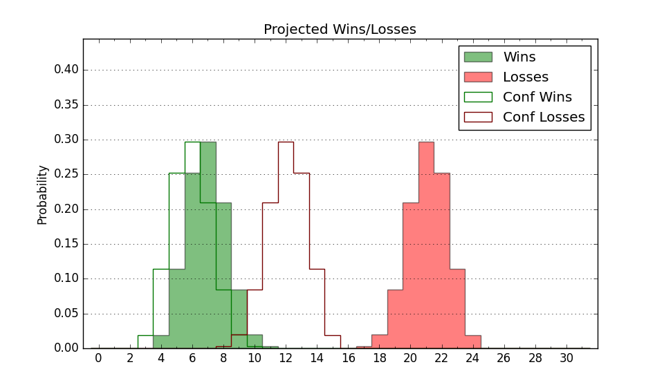

| Home | Game Probabilities | Conferences | Preseason Predictions | Odds Charts | NCAA Tournament |
| City: | Normal, Alabama | |
| Conference: | Southwest (8th)
| |
| Record: | 3-6 (Conf) 4-15 (Overall) | |
| Ratings: | Comp.: -26.6 (359th) Net: -27.3 (358th) Off: 90.9 (357th) Def: 118.2 (350th) SoR: 0.0 (136th) |
| Remaining | ||||||
|---|---|---|---|---|---|---|
| Date | Opponent | Win Prob | Pred. | |||
| 2/8 | Southern (224) | 18.6% | L 67-78 | |||
| 2/10 | Grambling St. (334) | 43.7% | L 69-71 | |||
| 2/15 | @ Mississippi Valley St. (364) | 72.4% | W 73-67 | |||
| 2/17 | @ Arkansas Pine Bluff (363) | 45.1% | L 84-86 | |||
| 2/22 | Bethune Cookman (269) | 26.8% | L 69-76 | |||
| 2/24 | Florida A&M (342) | 46.2% | L 75-76 | |||
| 3/1 | @ Alabama St. (307) | 13.5% | L 70-83 | |||
| 3/6 | @ Grambling St. (334) | 18.6% | L 65-75 | |||
| 3/8 | @ Southern (224) | 6.3% | L 62-83 | |||
| Previous | Game Score | |||||
| Date | Opponent | Win Prob | Result | Off | Def | Net |
| 11/16 | @Tennessee St. (281) | 10.5% | L 71-81 | -9.1 | 14.9 | 5.8 |
| 11/19 | @Georgia (36) | 0.5% | L 45-93 | -14.4 | 0.2 | -14.2 |
| 11/22 | South Carolina St. (223) | 18.4% | L 70-82 | 5.9 | -10.7 | -4.9 |
| 11/23 | Coastal Carolina (305) | 34.5% | W 77-70 | 7.4 | -0.1 | 7.3 |
| 11/25 | IUPUI (326) | 41.3% | L 83-88 | 10.5 | -13.2 | -2.7 |
| 11/30 | Lipscomb (95) | 5.6% | L 44-82 | -29.7 | 11.4 | -18.3 |
| 12/15 | @Chattanooga (151) | 3.4% | L 63-85 | 10.8 | -15.1 | -4.3 |
| 12/18 | @UAB (123) | 2.5% | L 67-96 | -0.9 | -2.5 | -3.4 |
| 12/21 | Samford (118) | 7.8% | L 90-97 | 17.2 | -6.1 | 11.1 |
| 12/28 | @Georgia Tech (114) | 2.3% | L 49-92 | -20.9 | 5.1 | -15.9 |
| 1/4 | Arkansas Pine Bluff (363) | 73.7% | W 89-79 | -2.1 | 3.2 | 1.1 |
| 1/6 | Mississippi Valley St. (364) | 89.9% | W 79-67 | -3.2 | -5.8 | -9.0 |
| 1/11 | @Alcorn St. (330) | 17.7% | L 52-62 | -19.3 | 19.0 | -0.3 |
| 1/13 | @Jackson St. (296) | 11.9% | L 93-103 | 1.2 | 8.2 | 9.5 |
| 1/18 | Alabama St. (307) | 34.7% | L 65-69 | -10.9 | 9.1 | -1.8 |
| 1/25 | Texas Southern (286) | 29.5% | L 78-82 | -4.1 | 3.9 | -0.2 |
| 1/27 | Prairie View A&M (329) | 42.2% | W 98-82 | 11.1 | 11.1 | 22.1 |
| 2/1 | @Florida A&M (342) | 20.1% | L 79-95 | 19.4 | -26.7 | -7.3 |
| 2/3 | @Bethune Cookman (269) | 9.7% | L 75-89 | 19.7 | -19.7 | -0.1 |
| Stats & Trends | |||||
|---|---|---|---|---|---|
| Current | Day | Week | Month | Season | |
| Composite | -26.6 | -0.1 | -0.6 | +0.8 | -11.0 |
| Comp Rank | 359 | -- | -- | +2 | -29 |
| Net Efficiency | -27.3 | +0.1 | -0.2 | +4.4 | -- |
| Net Rank | 358 | -- | +1 | +4 | -- |
| Off Efficiency | 90.9 | +1.2 | +2.3 | +3.6 | -- |
| Off Rank | 357 | +2 | +3 | +2 | -- |
| Def Efficiency | 118.2 | -1.1 | -2.5 | +0.8 | -- |
| Def Rank | 350 | -7 | -17 | +4 | -- |
| SoS Rank | 343 | +5 | +7 | -102 | -- |
| Exp. Wins | 6.9 | -0.1 | -0.3 | +0.2 | -5.3 |
| Exp. Conf Wins | 5.9 | -0.1 | -0.3 | +0.2 | -3.1 |
| Conf Champ Prob | 0.0 | -- | -- | -0.1 | -7.8 |

| Advanced Stats | ||
|---|---|---|
| Stat | Value | Rank |
| Off Eff FG % | 0.430 | 359 |
| Off Ast Ratio | 0.118 | 334 |
| Off ORB% | 0.311 | 120 |
| Off TO Rate | 0.185 | 347 |
| Off FT Ratio | 0.337 | 160 |
| Def Eff FG % | 0.562 | 341 |
| Def Ast Ratio | 0.175 | 345 |
| Def ORB% | 0.388 | 360 |
| Def TO Rate | 0.162 | 94 |
| Def FT Ratio | 0.460 | 352 |